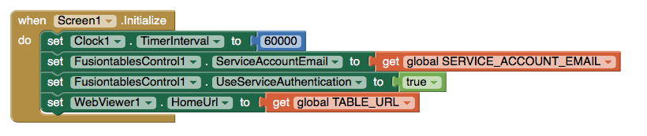
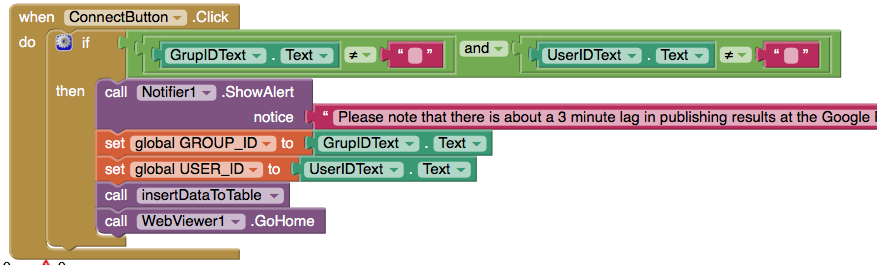

MIT App Inventor Project: Friend Locator
This project uses MIT's App Inventor coding environment to create an app that allows
a group of friends to connect and share GPS locations via a Google Fusion Table interface.
Source Code:
FriendLocator.aia
FriendLocator.apk
QR Code:
Code:

